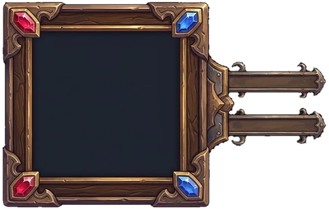
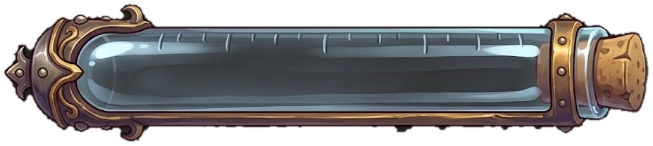
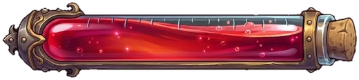
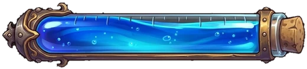
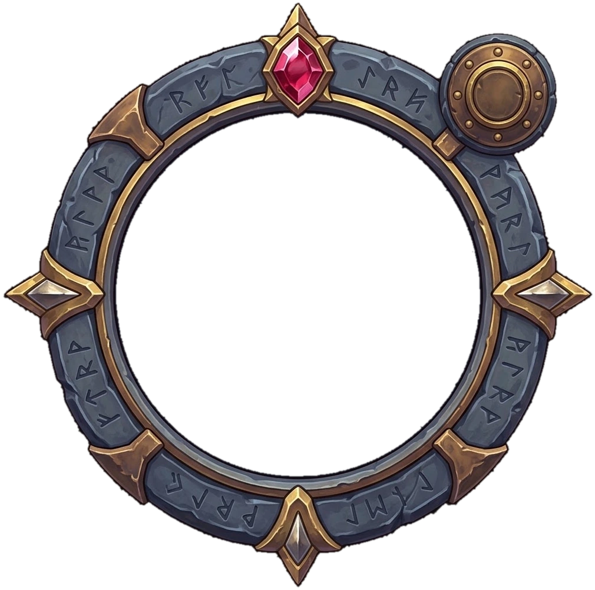
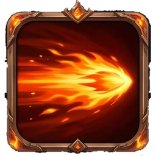
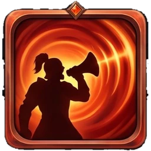
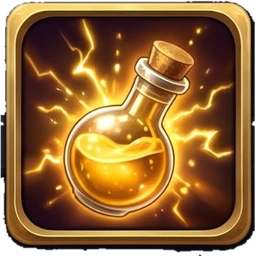
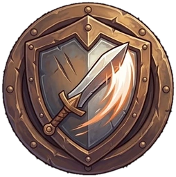

HUD com as peças pintadas — proposta
Cartão do herói, barras de vida e mana como vidros de poção, minimapa redondo de runas, medalhões de menu, habilidades e botões: todas as peças são as imagens aprovadas (recortadas em public/assets/ui). Provisório aqui: só o retrato do herói (emoji); menu e ataque já são os ícones pintados. Tamanhos reais de celular (844×390).

⚔️
1


243 / 289
60 / 10060




